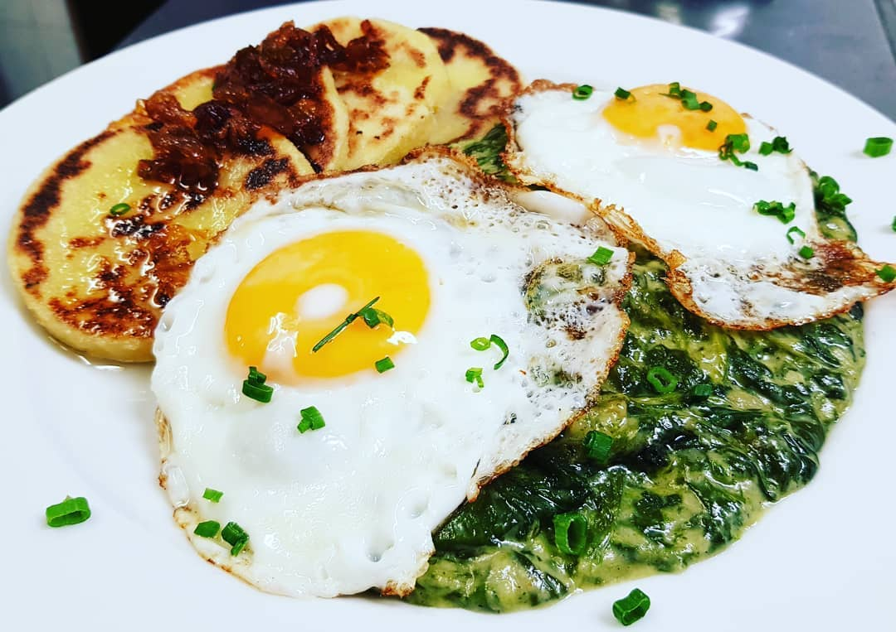

Dusený špenát podľa @u_drahusky — Normy Jedál
Jedeme české bomby. Dušený smetanový špenát se sazeným vejcem a k tomu bramborové placky. To byla středa. České speciality můžete chytit ještě čtvrtek a pátek. Třeba cmundu, stroganoff, králíka nebo játra.
.
#NaČeskouKuchyniKDrahušce #PoledniNabidka #Obed #NaObědKDrahušce #CzechFood #Prague #BramborovePlacky #SazeneVejce #DusenySpenat